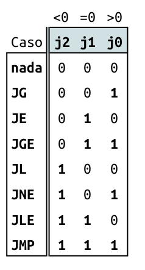

Lab 15: Assembler
O laboratório introduz uma série de conceitos e ferramentas e deve ser realizado individualmente ou em dupla (como indicado no começo de cada parte).
Ao final do laboratório você deverá ser capaz de:
- Entender o que é um arquivo
.hacke.mif - Ter o método
code.jumpimplementando e testado - Saber como executar os testes unitários
- Ter o método
parser.commandTypeimplementando - Saber como extrair informações dos testes unitários
- Ter o
fillSymbolTable.initializeimplementando
Antes de começar
Este laboratório será realizado já nos arquivos da entrega do projeto E-Assembler, portanto será necessário:
- Definir o scrum
- Atualizar o repositório do grupo com o do upstream
- Todos atuailizarem o repositório do grupo
Warning
Não seguir sem realizar a etapa anterior.
Parte 1 - Entendendo
Agora iremos desenvolver um programa em python que será capaz de ler nossos programas escritos em assembly (.nasm) e converter eles para .hack (binário). Nosso arquivo .hack é um arquivo de texto que possui apenas 1s e 0s. Cada linha desse arquivo .hack é uma instrução a ser armazenada na memória ROM e executado pela CPU.
Exemplo de um arquivo .hack:
000000000000000101
100101100000010000
000000000000000001
100000000000100000
000000000000001011
Você pode abrir seus arquivos .hack, basta ir em
sw/nasmque vai encontrar seus binários (executáveis) lá.
O arquivo .hack é um formato que não conseguimos fazer o download para a FPGA, então é necessário convertemos esse formato em um que o Quartus entenda. Esse formato do Quartus é chamado de .mif e é gerado automaticamente pelos scripts de teste, esse arquivo .mif é similar ao .hack salvo um cabeçalho e a indicação do endereço na qual a linha deve ser salva:
WIDTH=18;
DEPTH=5;
ADDRESS_RADIX=UNS;
DATA_RADIX=BIN;
CONTENT BEGIN
0 : 000000000000000101;
1 : 100101100000010000;
2 : 000000000000000001;
3 : 100000000000100000;
4 : 000000000000001011;
END;
Info
O Assembler de vocês deve gerar um arquivo .hack.
assembler script python
.nasm ---------> .hack --------> .mif
v
|---------> FPGA
|---------> SIMULADOR
Assembler
O assembler será um programa escrito em python e que foi estruturado em quatro classes:
Arquivos localizados no repositório de projetos: sw/assembler/
-
ASM
- Arquivo:
ASM.py - Descrição: Classe responsável por criar o código de máquina, ela que efetivamente faz a varredura do arquivo
.nasmde entrada e escreve o arquivo.hackde saída, gerando o código de máquina. - Dependências:
ASMcode.py,Parser.py,SymbolTable.py - Teste:
test_asm.py
- Arquivo:
-
Code
- Arquivo :
ASMcode.py - Descrição : Traduz mnemônicos da linguagem assembly para códigos binários da arquitetura Z0.
- Dependências : none
- Teste:
test_asmcode.py
- Arquivo :
-
Parser
- Arquivo:
ASMparser.py - Descrição : Encapsula o código de leitura. Carrega as instruções na linguagem assembly, analisa, e oferece acesso as partes da instrução (campos e símbolos). Além disso, remove todos os espaços em branco e comentários.
- Dependências : none
- Teste:
test_asmparser.py
- Arquivo:
-
SymbolTable
- Arquivo :
ASMsymbolTable.py - Descrição : Mantém uma tabela com a correspondência entre os rótulos simbólicos e endereços numéricos de memória.
- Dependências : none
- Teste:
test_asmsymboltable.py
- Arquivo :
Note que o 'orquestrador' da montagem (esse é o termo em português utilizado) é a classe 'Assemble', nela que estará toda a lógica de montagem acessoada pelas demais classes.
Parte 2 - ASMCode
Deve ser realizado individual (porém discutindo no grupo)
Iremos agora implementar um dos métodos da classe Code, a parte responsável por gerar os três bits referentes ao jump:

No vscode abra o código ASMcode.py e procure pelo método jump:
# TODO
def jump(self, mnemnonic):
"""
Retorna o código binário do mnemônico para realizar uma operação de jump (salto).
- in mnemnonic: vetor de mnemônicos "instrução" a ser analisada.
- return bits: (String de 3 bits) com código em linguagem de máquina para a instrução.
"""
bits = "000"
return bits
Agora abra o arquivo test_asmcode e procure pelo test_jump, você deve ver algo como:
def test_jump():
test_vector = [
.....
[["orw", "%D", "%A", "%A"], "000"],
[["jmp"], "111"],
[["je"], "010"],
[["jne"], "101"],
[["jg"], "001"],
[["jge"], "011"],
[["jl"], "100"],
[["jle"], "110"],
]
code = Code()
for t in test_vector:
result = code.jump(t[0])
assert result == t[1], erroMsg(t, result)
Note que o input dessa função é um array de strings, chamado mnemnonic e seu retorno é uma string. No mnemnonic será passado a instrução a ser executada da seguinte forma:
{"jmp"}{"jge", "S"}{"jg", "%D"}- ...
E deve retornar o binário correspondente aos bits j2, j1 e j0 do comando de jump :
111,011,010, ....
Note que aesa classe não precisa se preocupar com a origem do jump (%A, %D, ...) apenas com o seu tipo
jmp,jge, ...
Exercise 1
Parte 3 - Parser
Desenvolvimento baseado em testes é uma técnica que temos utilizado até agora para os nosso projetos, nesse método fragmentando o desenvolvimento em pequenos módulos que são testados de forma individual, por testes unitários. O desenvolvimento é focado em fazer com que os módulos passem nos testes.
Como os testes não são perfeitos e não conseguem cobrir toda a funcionalidade do módulo, é necessário realizarmos o teste de integração, onde juntamos todas as peças e testamos o sistema como um todo.
Dentro da pasta do novo projeto, temos um arquivo de teste para cada módulo, desenvolvido em pytest:
test_asm.pytest_asmcode.pytest_asmparser.pytest_symboltable.py
E alguns arquivos que ajudam na realizacão dos testes, localizados em test_assets. Os testes são uma guia do que cada método deve fazer, e eles servirão como complemento da documentação do módulo. Iremos seguir o fluxo:
- Ler descrição do método
- Abrir teste unitário e entender o que é passado e o que é esperado
- Desenvolver método
- Testar
- Falhou? Volte para 1.
Vamos pegar como exemplo o método commandType do sw/assembler/ASMparser.py:
# TODO
def commandType(self):
"""
Retorna o tipo da instrução passada no argumento:
- self.commandType['A'] para leaw, por exemplo leaw $1,%A
- self.commandType['L'] para labels, por exemplo Xyz: , onde Xyz é um símbolo.
- self.commandType['C'] para todos os outros comandos
@param command instrução a ser analisada.
@return o tipo da instrução.
"""
pass
Exercise 2
Answer
O módulo commandType pertence ao parser, logo o teste estará localizado no test_asmparser.py
Exercise 3
Answer
- Nesse teste é passado o vetor
["leaw", "$2", "%A"]para o métodoparser.commandTypee esperasse na saídaA_COMMAND, .... .
def test_commandType():
fnasm = open('test_assets/mult.nasm', 'r')
ptest = Parser(fnasm)
ptest.currentCommand = ['leaw', '$2', '%A']
assert ptest.commandType() == ptest.CommandType['A']
ptest.currentCommand = ['movw', '$1', '%A']
assert ptest.commandType() == ptest.CommandType['C']
ptest.currentCommand = ['WHILE:']
assert ptest.commandType() == ptest.CommandType['L']
ptest.currentCommand = ['leaw', '$31', '%A']
assert ptest.commandType() == ptest.CommandType['A']
ptest.currentCommand = ['addw', '%D', '%A', '%D']
assert ptest.commandType() == ptest.CommandType['C']
ptest.currentCommand = ['rsubw', '%D', '%A', '%D']
assert ptest.commandType() == ptest.CommandType['C']
Exercise 4
Exercise 5
Parte 4 - Symboltable
Implemente o método init da classe SymbolTable utilizando os conceitos visto nos outros labs.
Exercise 6